기계설계산업기사 (2008-09-07 기출문제)
1과목: 기계가공법 및 안전관리
1. 선반가공에서 작업자의 안전을 위해 칩을 인위적으로 짧게 끊어지도록 만드는 것은?
- 여유각
- 경사각
- 칩 브레이커
- 인선 반지름
(정답률: 88%)

2. 시준기와 망원경을 조합한 것으로 미소 각도를 측정할 수 있는 광학적 각도 측정기는?
- 베벨 각도기
- 오토 콜리메이터
- 광학식 각도기
- 광학식 콜리메이터
(정답률: 54%)
3. 일반적으로 공구 연삭기오 연삭하는 절삭공구로 적합하지 않은 것은?
- 바이트
- 줄
- 드릴
- 밀렁커러
(정답률: 62%)
4. 환봉을 황삭가공하는데 이송을 0.1mm/rev로 하려고 한다. 바이트의 노즐반경이 1.5mm라고 한다면 이론상의 최대 표면 거칠기는 얼마 정도가 되겠는가?
- 8.3×10-4mm
- 8.3×-3mm
- 8.3×10-5mm
- 8.3×10-2mm
(정답률: 39%)
5. 밀링머신의 부속장치가 아닌 것은?
- 슬로팅 장치
- 회전 테이블
- 래크 절삭장치
- 맨드릴
(정답률: 62%)
6. 각도 측정기의 종류가 아닌 것은?
- 플러그 게이지
- 사인바
- 컴비네이션 세트
- 수준기
(정답률: 58%)
7. 기어 절삭법에 해당되지 않는 것은?
- 선반에 의한 절삭법
- 형판에 의한 절삭법
- 창성에 의한 절삭법
- 총형 공구에 의한 절삭법
(정답률: 65%)
8. 높은 정밀도를 요구하는 가공물, 각종 지그, 정밀기계의 구멍 가공 등에 사용하는 보링머신으로, 온도 변화에 따른 영향을 받지 않도록 항온 항습실에 설체해야 하는 것은?
- 코어보링 머신
- 수직보링머신
- 수평보링머신
- 지그보링머신
(정답률: 58%)
9. 선삭에서 테이퍼의 지름을D(mm), 작은 지름을 d(mm), 테이퍼 부분의 길이를 ℓ(mm), 일감의 전체길이를 L(mm)이라 하면, 심압대의 편위량e(mm)를 구하는 식으로 옳은 것은?
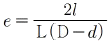
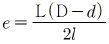
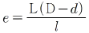
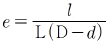
(정답률: 66%)
10. 주철을 저속으로 절삭할 때 주로 나타나는 칩(chip)의 형태는?
- 전단형
- 열단형
- 유동형
- 균열형
(정답률: 36%)
11. 브로치 절삭날 피치를 구하는 식은? (단, P=피치, L=절삭날의 길이, C는 가공물 재질에 따른 상수이다.)
- P=C√L
- P=C×L
- P=C×L2
- P=C2×L
(정답률: 36%)
12. 수작업으로 선재, 봉재 등에 수나사를 깍을 때 사용하는 공구는?
- 탭
- 다이스
- 스크레이퍼
- 커터
(정답률: 65%)
13. 숏 피닝(shot peening) 가공 조건에 중요한 영향을 미치지 않는 것은?
- 분사속도
- 분사각도
- 분사액
- 분사면적
(정답률: 39%)
14. 드릴의 구멍뚫기 작업을 할 떄 주의해야 할 사항이다. 틀린 것은?
- 드릴은 흔들리지 않게 정확하게 고정해야 한다.
- 장갑을 끼고 작업을 하지 않는다.
- 구멍뚫기가 끝날 무렵은 이송을 천천히 한다.
- 드릴이나 드릴 소켓 등을 뽑을 때에는 해머 등으로 두들겨 뽑는다.
(정답률: 80%)
15. 밀링 가공시 지켜야 할 안전사항으로 틀린 것은?
- 저삭 가공 중 칩을 제거할 때에는 장갑 낀 손으로 제거한다.
- 가공물은 바른 자세에서 단단하게 고정한다.
- 가동 전에 각종 레버, 자동이송, 급송이송 등을 반드시 점검한다.
- 칩 커버를 설치한다.
(정답률: 80%)
16. CNC 선반가공용 프로그램에서 G96 S100M03 ; 일 때S100의 의미는?
- 회전당 이송량
- 원주속도 100m/min으로 일정제어
- 분당 이송량
- 회전수 100 rpm으로 일정 제어
(정답률: 48%)
17. 밀링 머신 중 분할대나 헬리컬 절삭 장치를 사용하려 헬리컬 기어, 트위스트 드릴의 비틀림 홈 등의 가공에 가장 적합한 것은?
- 수직 밀링 머신
- 수평 밀링 머신
- 만능 밀링 머신
- 플레이너형 밀링 머신
(정답률: 58%)
18. 산화 알루미늄 분말을 주성분으로 하여 마그네슘, 규소 등의 산화물과 소량의 다른 원소를 첨가하여 소렴한 절삭 공구 재료는?
- 고속도강
- 세라믹
- CBN공구
- 초경합금
(정답률: 57%)
19. 밀링 가공에서 테이블의 이송 속도를 구하는 식은? (단, F는 테이블 이송속도(mm/min), fz는 커터 1개의 날당이송(mm/tooth), Z는 커터의 날 수, n은 커터의 회전수(rpm, fr은 커터 1회전당 이송(mm/rev)이다.)
- F=fz×Z×n
- F=fz×Z
- F=fr×fz
- F=fz×fr×n
(정답률: 78%)
20. 연삭숫돌의 결합도가 높은 것을 사용해야 하는 연삭작업은?
- 경도가 큰 가공물을 연삭할 경우
- 숫돌차의 원주 속도가 빠를 경우
- 접촉 면적이 작은 연삭작업일 경우
- 연삭깊이가 클 경우
(정답률: 23%)
2과목: 기계제도
21. 보기와 같은 입체도의 제3각 투상도로 가장 적합한 것은? (단, 화살표 방향을 정면도로 한다.)
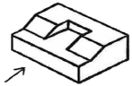
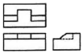
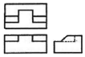
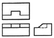
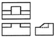
(정답률: 82%)
22. 다음 보기는 억지끼워맞춤을 나타내고 있다. 최소 죔쇄는 얼마인가?
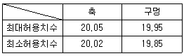
- 0.03
- 0.07
- 0.10
- 0.20
(정답률: 79%)
23. 보기와 같이 실형을 도시하기 위하여 나타내는 투상도 명칭으로 가장 적합한 것은?
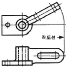
- 전개도
- 보조투상도
- 실투상도
- 회전투상도
(정답률: 45%)
24. 치수 기입법 중 현의 길이를 올바르게 표시한 것은?
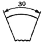
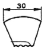
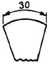
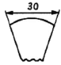
(정답률: 54%)
25. 동일 호칭치수의 구멍기준 끼워맞춤을 할 때 틈새가 가장 큰 끼워맞춤으로 짝지워진 것은?
- 구멍 공차역 : A, 축 공차역 a
- 구멍 공차역 : A, 축 공차역 z
- 구멍 공차역 : Z, 축 공차역 a
- 구멍 공차역 : Z, 축 공차역 z
(정답률: 46%)
26. 다음 도면에서 X부분의 치수는 얼마인가?
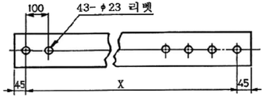
- 2200
- 2300
- 4200
- 4300
(정답률: 83%)
27. 아래 원뿔을 전개하면 오른쪽의 전개도와 같을 때 θ는 약 몇 도(°)인가? (단, r=20mm, h=100mm이다.)
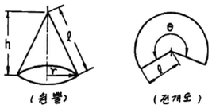
- 약 120°
- 약 100°
- 약 90°
- 약 70°
(정답률: 33%)
28. 제3각법으로 각각 다른 물체가 투상된 투상도 중 잘못된 투상도가 있는 것은?
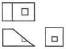
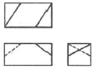
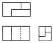
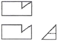
(정답률: 65%)
29. 한국산업규격(KS)에서 일반구조용 압연 강재의 기호는?
- SS
- SM
- SPCC
- SPA
(정답률: 76%)
30. 나사를 도시하는 방법으로 옳은 것은?
- 수나사의 바깥 지름은 가는 실선으로 그린다.
- 완전 나사부와 불완전 나사부의 경계선은 가는 2점쇄선으로 그린다.
- 암나사의 골 지름은 굵은 실선으로 그린다.
- 수나사의 골 지름은 가는 실선으로 그린다.
(정답률: 69%)
31. 스케치 부품의 표면에 기름이나 광면단을 얇게 칠하고 그 위에 종이를 대고 문질러서 실제의 모양을 뜨는 방법은?
- 직접 본뜨기법
- 프린트법
- 간접 본뜨기법
- 사진 촬영법
(정답률: 63%)
32. 길이의 허용한계 치수를 잘못 기입한 것은?(오류 신고가 접수된 문제입니다. 반드시 정답과 해설을 확인하시기 바랍니다.)
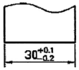
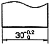
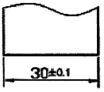
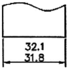
(정답률: 65%)
33. 다음 그림과 같은 도면에서 참고 치수를 나타내는 것은?
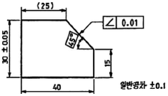
- (25)
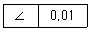
- 40
- 30±0.⑤
(정답률: 86%)
34. 도면에 나타난 용접기호의 지시사항을 가장 올바르게 설명한 것은?
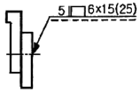
- 슬롯 너비 5mm, 용접부 깃이 15mm인 플러그 용접 6개소
- 스폿의 지름이 6mm이고 피치는 15mm인 스폿 용접
- 덧붙임 폭 5mm, 용접부 길이 15mm인 덧붙임 용접
- 스폿부 지름이 6mm이고 피치는 15mm인 심 용접
(정답률: 55%)
35. 축을 가공하기 위해 센터 구멍의 도시 방법 중 그림과 같은 도시 기호의 의미는?
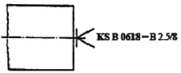
- 반드시 센터 구멍을 남겨둔다.
- 센터구멍이 남아 있어서는 좋다.
- 센터구멍이 남아 있어서는 안된다.
- 센터의 규격에 따라 다르다.
(정답률: 67%)
36. 그림과 같은 부등변, 부등 두께ㄱ형강의 기호 및 치수 표시법으로 올바른 것은?
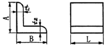
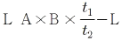
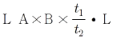
- L A×B×t1×t2-L
- L A×B×t2×t1-L
(정답률: 71%)
37. 다듬질 가공에서 도면에 표시하는 스크레이퍼(scraper) 가공의 기호는?
- SH
- BR
- FS
- FB
(정답률: 72%)
38. 다음 입체도의 화살표 방향 투상도로 가장 적합한 것은?
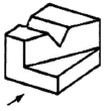
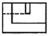
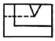
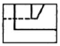
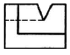
(정답률: 67%)
39. 기하공차 기호 중에서 평면도를 표시하는 기호는?
- ▱
- //
- ○
- ⌧
(정답률: 74%)
40. 제3각 투상법으로 제도한 보기 평면도와 좌측면도에 가장 적합한 정면도는?
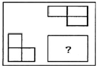
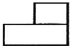
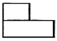
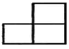
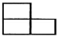
(정답률: 76%)
3과목: 기계설계 및 기계재료
41. 다음 철광석 중에서 철의 성분이 가장 많이 포함된 것은?
- 자철광
- 망간광
- 갈철광
- 능철광
(정답률: 72%)
42. 구리에 5~20%Zn을 것으로 전연성이 좋고 색깔도 아름답기 때문에 장식용 금속 잡화, 모조금 등에 사용되는 황동은?
- 네이벌 황동
- 양은
- 델타 메탈
- 톰백
(정답률: 76%)
43. 다음 중 연강이 사용되지 않는 것은?
- 볼트
- 리벨
- 파이프
- 게이지
(정답률: 72%)
44. 일반적으로 탄소강의 청열 취성(blue shortness)이 나타나는 온도는?
- 50~150℃
- 200~300℃
- 400~500℃
- 600~700℃
(정답률: 54%)
45. 다음 금속 중 결정 구조가 면심입방격자구조인 것은?
- 코발트(Co)
- 크롬(Cr)
- 몰리브덴(Mo)
- 알루미늄(Al)
(정답률: 61%)
46. 알루미늄 합금으로 피스톤 재료에 사용되는 Y합금의 성분을 바르게 표현한 것은?
- Al-Cu-Ni-Mg
- Al-Mg-Fe
- Al-Cu-Mo-Mn
- Sl-Si-Mn-Mg
(정답률: 68%)
47. 순철의 자기변태점은?
- A0
- A2
- A3
- A4
(정답률: 41%)
48. 공구강의 구비조건을 설명한 것으로 틀린 것은?
- 내마모성이 작을 것
- 상온 및 고온 경도가 클 것
- 열처리 변형이 적을 것
- 인성이 커서 충격에 견딜 것
(정답률: 65%)
49. 다음 중 내식성 알루미늄 합금이 아닌 것은?
- 알민(almin)
- 알드레이(aldrey)
- 엘린바(elinvar)
- 하이드로날륨(hydronalium)
(정답률: 53%)
50. 구리에 대한 설명으로 틀린 것은?
- 전기 및 열의 전도성이 우수하다.
- 전연성이 좋아 가공이 용이하다.
- 아름다운 광택과 귀금속적 성질이 우수하다.
- 결정 격자가 체심입방격자이며 변태점이 있다.
(정답률: 60%)
51. 온도변화에 따라 배관에 열응력이 크게 방생하면 관과 부속장치의 변형 및 파손이 일어나는데, 이를 방지하기 위한 이음은?
- 신축 이음
- 리벳 이음
- 플랜지 이음
- 나사 이음
(정답률: 38%)
52. 지름 14mm의 연강봉에 8000N의 인장하중이 작용할 때 발생하는 응력은 몇 N/mm2인가?
- 15
- 23
- 46
- 52
(정답률: 42%)
53. 바로걸기 벨트의 경우 이완측을 위쪽에 오게 하는 가장 큰 이유는?
- 벨트 걸기가 쉬워진다.
- 벨트가 잘 벗겨지지 않는다.
- 미끄럼이 커진다.
- 접촉각이 커져, 전동 효율이 좋아진다.
(정답률: 60%)
54. 다음 그림과 같은 스프링장치에서 각 스프링의 상수 K1=40N/cm, K2=50N/cm, K3=60N/cm이며, 하중방향의 처짐이 150mm일 때 작용하는 하중 P는 약 몇 N인가?
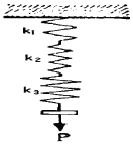
- 2250
- 964
- 389
- 243
(정답률: 42%)
55. 회전수 1500rpm, 축의 직경 110mm인 묻힘키를 설계하려고 한다. b(폭)×h(높이)×ℓ(길이)=28mm×18m×300mm일 때 묻힘키가 전달할 수 있는 최대 동력(kW)은? (단, 키의 허용전단응력 τa=40N/mm2이며, 키의 허용 전단응력만을 고려한다.)
- 933.⑤
- 1264.86
- 2902.83
- 3759.42
(정답률: 30%)
56. 회전속도가 200rpm으로 7.35kW를 전달하는 연강 중실축의 지름은 몇 mm 이상이어야 하는가? (단, 허용응력 τ=20.58N/mm2이고, 축은 비틀림 모멘트만을 받는다.)
- 44.3
- 49.1
- 54.7
- 59.8
(정답률: 32%)
57. 볼베어링에서 기본 베어링 수명이 L1일 때 동일 조건하에 베어링에 가하는 하중을 2배로 하면, 이 때 베어링 수명(L2)는 어떻게 되는가?
- L2=2L1
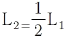
- L2=8L1
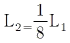
(정답률: 33%)
58. 「비례한도 이내에서 응력과 변형률은 비례한다.」라는 법칙은 무엇이라 하는가?
- 오일러의 법칙
- 프아송의 법칙
- 아베의 법칙
- 후크의 법칙
(정답률: 43%)
59. 하중을 작용방향과 작용시간 등에 분류할 때, 작용방향에 따른 분류에 속하지 않는 것은?
- 압축하중
- 충격하중
- 인장하중
- 전단하중
(정답률: 64%)
60. M20×2.5 나사가 유효지름 18.396mm이고, 마찰계수가 0.1일 때 나사의 효율은?
- 약 37%
- 약 56%
- 약 27%
- 약 46%
(정답률: 29%)
4과목: 컴퓨터응용설계
61. 곡선들 중에서 원추단면 곡선(conic section curve)이 아닌 것은?
- 포물선(Parabola)
- 타원(Ellipse)
- B-스플라인(B-spline)
- 쌍곡선(Hyperbola)
(정답률: 71%)
62. 다음과 같은 2차원 동차 좌표계에서 l, m과 관계가 있는 것은?
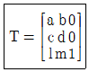
- 자료의 이동
- 자료의 확대ㆍ축소
- 자료의 회전
- 자료의 대칭
(정답률: 64%)
63. CRT 화면상에서 도형이나 화상을 구성하는 화점 요소로서, 화면상에 가로와 세로로 각각 등 간격으로 위치하며 스크린의 해상도를 결정하는 요소를 무엇이라 하는가?
- PICEL
- PART
- PITCH
- PICK
(정답률: 75%)
64. CAD 시스템에서 디스플레이 장치가 아닌 것은?
- DED(Digital Equipment Display)
- PDP(Plasma Display Pannel)
- TFT-LCD(Thin Film Transistor-Liquid Crystal Display)
- CRT(Cathode Ray Tube) display
(정답률: 48%)
65. 컴퓨터의 데이터 코드체계 중 ASCII 코드가 표현할 수 있는 문자, 숫자 등의 가지수는 몇 개인가?
- 64개
- 128개
- 256개
- 512개
(정답률: 40%)
66. CAD 소프트웨어와 가장 관계가 먼 것은?
- AutoCAD
- EXCEL
- Solidworks
- CATIA
(정답률: 79%)
67. 3차원 동차좌표계에서 변환 행렬(matrix)의 크기는 얼마로 해야 일반성이 있는가?
- (2×2)
- (3×3)
- (4×4)
- (6×6)
(정답률: 58%)
68. 중앙처리장치(CPU)의 구성요소가 아닌 것은?
- 주기억장치
- 하드디스크장치
- 연산논리장치
- 제어장치
(정답률: 67%)
69. 두 벡터
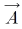
= (2, 3, 7),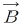
= (2, 1, 4)일 때 벡터의 내적을 구하면 얼마인가?- 32
- 33
- 34
- 35
(정답률: 36%)
70. 컴퓨터의 중앙처리장치에서 사용되는 고속의 기억소자로 2진법 체계로 데이터를 받고, 저장, 전송하는 기능을 갖고 있는 장소를 무엇이라 하는가?
- MAIN MEMORY
- REGISTER
- BASIC
- REFRESH
(정답률: 34%)
71. 서피스 모델(surface model)에 대한 설명으로 가장 관계가 먼 것은?
- 은선 제거가 가능하다.
- 단면도 작성이 가능하다.
- NC data를 생성 할 수 있다.
- 중량 데이터를 구하기 쉽다.
(정답률: 64%)
72. 이미 정의된 두 곡면을 매끄럽게 연결하는 것을 무엇이라 하는가?
- 스위핑(sweeping)
- 스키닝(skinning)
- 블랜딩(blending)
- 리프팅(lifting)
(정답률: 71%)
73. 지정된 점(정점 또는 조정점)을 반드시 통과하도록 고안된 곡선은?
- Bezier curve
- B-spline curve
- Spline curve
- NURBS curve
(정답률: 41%)
74. CAD 시스템의 입력장치가 아닌 것은?
- Thumb wheel
- Joystick
- Track ball
- Pen plotter
(정답률: 52%)
75. 누산기(accumulator)에 대하여 올바르게 설명한 것은?
- 레지스터의 일종으로 산술연산 혹은 논리연산의 결과를 일시적으로 기억하는 장치이다.
- 연산명령이 주어지면 연산준비를 하는 장소이다.
- 연산명령의 순서를 기억하는 장소이다.
- 연산부호를 해독하는 장치이다.
(정답률: 51%)
76. 변환행렬(transformation matrix)이 필요 없는 데이터 변환 작업은?
- Selection
- Reflection
- Rotation
- Scaling
(정답률: 43%)
77. CAD/CAM에서 사용하는 기하학적 형상의 3차원 모델링 방법이 아닌 것은?
- 와이어 프레임(wire frame) 모델링
- 서피스(surface) 모델링
- 솔리드(solid) 모델링
- 윈도우(window) 모델링
(정답률: 80%)
78. (x+7)2+(y-4)2=64인 원의 중심과 반지름을 구하면?
- 중심 (-7, 4), 반지름 8
- 중심 (7, 4), 반지름 8
- 중심 (-7, 4), 반지름 64
- 중심 (-7, -4), 반지름 64
(정답률: 56%)
79. 그래픽 소프트웨어가 반드시 가져야 할 기능이 아닌 것은?
- 데이터의 변환기능
- 그래픽 형상을 만드는 기능
- 사용자 입력기능
- 네트워크 기능
(정답률: 75%)
80. LAN 시스템의 주요 특징으로 가장 거리가 먼 것은?
- 자료의 전송속도가 빠르다.
- 통신망의 결합이 용이하다.
- 신규장비를 전송매체로 점가하기가 용이하다.
- 장거리 구역 내에서 정보통신에 용이하다.
(정답률: 63%)